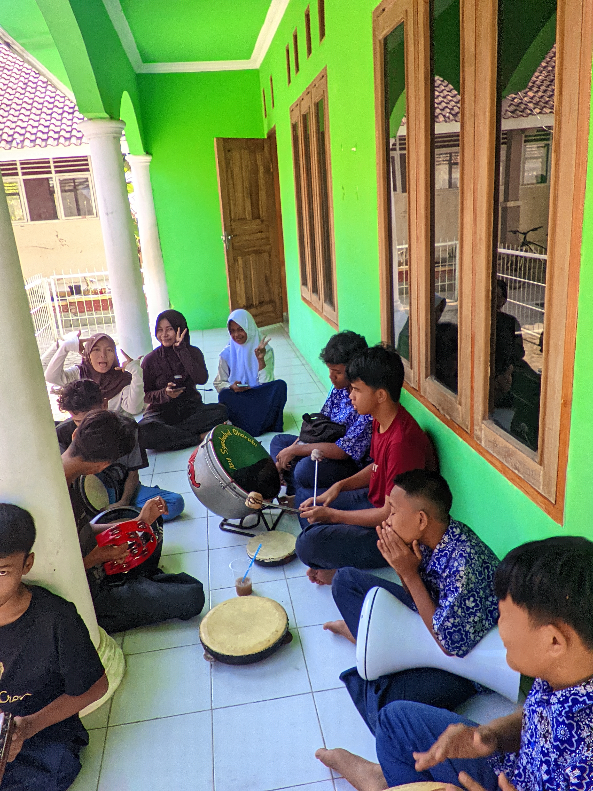

Ekstrakurikuler Hadroh

Tentang Hadroh
Ekstrakurikuler Hadroh merupakan salah satu kegiatan pengembangan diri yang bertujuan untuk mengembangkan bakat dan minat peserta didik dalam bidang seni musik Islami serta menumbuhkan kecintaan terhadap seni dan budaya Islami.
Melalui kegiatan Hadroh, peserta didik belajar memainkan alat musik perkusi secara bersama-sama dengan memperhatikan irama, tempo, kekompakan, dan keselarasan dalam kelompok. Kegiatan ini juga menjadi sarana untuk meningkatkan kreativitas, kepercayaan diri, kedisiplinan, dan kemampuan bekerja sama.
Kegiatan Hadroh
Dalam kegiatan Hadroh, peserta didik mengikuti berbagai latihan musik dan vokal yang dilakukan secara rutin untuk meningkatkan keterampilan serta kekompakan anggota.
- Latihan dasar memainkan alat musik Hadroh
- Latihan teknik dan pola pukulan
- Latihan vokal dan lantunan shalawat
- Latihan irama dan tempo
- Latihan kekompakan dan kerja sama kelompok
- Latihan penampilan dan pertunjukan
- Mengikuti kegiatan keagamaan dan acara sekolah
Tujuan Kegiatan
Melalui ekstrakurikuler Hadroh, peserta didik diharapkan mampu mengembangkan kemampuan dalam bidang seni musik Islami serta memiliki kedisiplinan, tanggung jawab, kepercayaan diri, dan kemampuan bekerja sama dalam kelompok.
Selain itu, kegiatan Hadroh diharapkan dapat menumbuhkan kecintaan terhadap seni dan budaya Islami, meningkatkan kreativitas, mempererat kebersamaan, serta membentuk sikap positif dan percaya diri dalam mengikuti berbagai kegiatan di lingkungan sekolah.
← Kembali ke Ekstrakurikuler